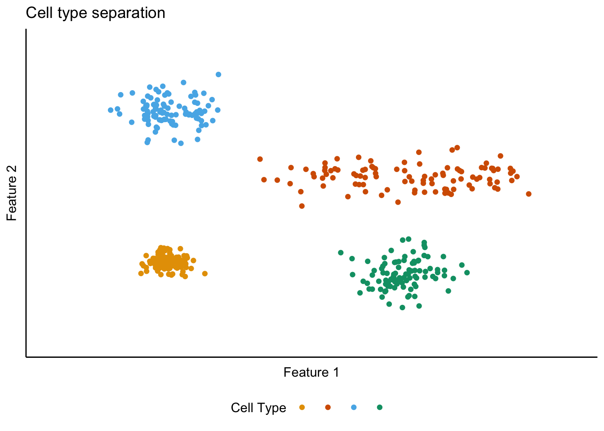
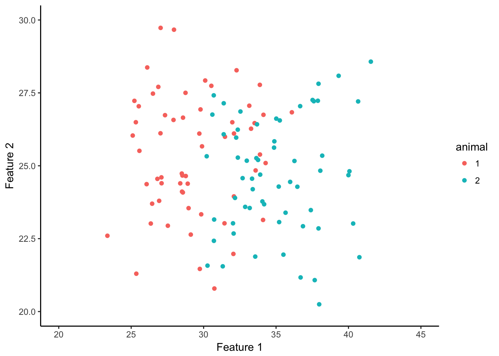

Chapter 1 Figure 1
The goal is to generate schematic diagrams to illustrate the ideas to be tested by the analyses.
First generate simulated data. Imagine a dataset describing individual cells using two quantifiable features (x and y). In this scenario different cell class could be separated using these features. Each cell class is modeled as having variance for each feature.
The distribution of features of cell class A has a simple structure in which the variance is around a point.
For cell class B the distribution of features is along a line.
Cell classes C and D have a similar distribution to A, but are centered at different values of one or both features.
numcells <- 100
Cell_A <- tibble(x = rnorm(numcells, 10, 1),
y = rnorm(numcells, 12, 1),
cell = "A")
Cell_B <- tibble(x = runif(numcells, min = 20, max = 40) + rnorm(numcells,0,1),
y = rnorm(numcells, 25, 2),
cell = "B")
Cell_C <- tibble(x = rnorm(numcells, 10, 2),
y = rnorm(numcells, 35, 2),
cell = "C")
Cell_D <- tibble(x = rnorm(numcells, 30, 2),
y = rnorm(numcells, 10, 2),
cell = "D")
CellFeatures <- bind_rows(Cell_A, Cell_B, Cell_C, Cell_D)Plot cell features using a colour blind friendly palette (from http://www.cookbook-r.com/Graphs/Colors_(ggplot2)/).
cbPalette <- c("#E69F00", "#D55E00", "#56B4E9", "#009E73")
CF_plot <- ggplot(CellFeatures, aes(x, y, colour = cell)) +
geom_point() +
xlim(0,45) +
ylim(0,45) +
labs(x = "Feature 1", y = "Feature 2", colour = "Cell Type", title = "Cell type separation") +
scale_colour_manual(values=cbPalette) +
theme_classic() +
theme(legend.position = "bottom",
axis.ticks = element_blank(),
axis.text = element_blank(),
legend.text = element_blank())
CF_plot
Focus on cell class B. First imagine how a distribution like the one above could be generated by pooling data from multiple animals in which the actual distribution is modular. Considered colour / intensity coding the points to reflect a functional variable, e.g. dorsoventral position in MEC. Would probaly add too much information.
numcells <- 20
MF_A <- tibble(x = c(rnorm(numcells, 26, 0.5), rnorm(numcells, 31, 0.5), rnorm(numcells, 36, 0.5)),
y = rnorm(numcells*3, 25, 2),
animal = "1")
MF_B <- tibble(x = c(rnorm(numcells, 28.5, 0.5), rnorm(numcells, 33.5, 0.5), rnorm(numcells, 38.5, 0.5)),
y = rnorm(numcells*3, 25, 2),
animal = "2")
ModularFeatures <- rbind(MF_A, MF_B)
MF_plot <- ggplot(ModularFeatures, aes(x, y, colour = animal)) +
geom_point() +
xlim(20,45) +
ylim(20,30) +
xlab("Feature 1") +
ylab("Feature 2") +
theme_classic() +
theme(axis.title.x=element_blank())
MF_plot## Warning: Removed 2 rows containing missing values (geom_point).
Next imagine a scenarion in which the distribution in D is continuous within an animal, but for which there are inter-animal differences in the mean of feature 2.
numcells <- 60
OOF_A <- tibble(x = runif(numcells, min = 25, max = 40) + rnorm(numcells,0,1),
y = rnorm(numcells, 23, 1),
animal = "1")
OOF_B <- tibble(x = runif(numcells, min = 25, max = 40) + rnorm(numcells,0,1),
y = rnorm(numcells, 27, 1),
animal = "2")
OrthogOffsetFeatures <- rbind(OOF_A, OOF_B)
OOF_plot <- ggplot(OrthogOffsetFeatures, aes(x, y, colour = animal)) +
geom_point() +
xlim(20,45) +
ylim(20,30) +
xlab("Feature 1") +
ylab("Feature 2") +
theme_classic()
OOF_plot
Finally, imagine a scenario in which the distribution in D is continuous within an animal but the range across the variable feature differs between animals.
numcells <- 60
LOF_A <- tibble(x = runif(numcells, min = 25, max = 35) + rnorm(numcells,0,1),
y = rnorm(numcells, 25, 2),
animal = "1")
LOF_B <- tibble(x = runif(numcells, min = 30, max = 40) + rnorm(numcells,0,1),
y = rnorm(numcells, 25, 2),
animal = "2")
LinearOffsetFeatures <- rbind(LOF_A, LOF_B)
LOF_plot <- ggplot(LinearOffsetFeatures, aes(x, y, colour = animal)) +
geom_point() +
xlim(20,45) +
ylim(20,30) +
xlab("Feature 1") +
ylab("Feature 2") +
theme_classic()
LOF_plot## Warning: Removed 2 rows containing missing values (geom_point).
Combine models for intra-animal variation and make plots using facets.
ModularFeatures$scheme <- "modular"
OrthogOffsetFeatures$scheme <- "orthog"
LinearOffsetFeatures$scheme <- "linear"
IntraAnimal <- bind_rows(ModularFeatures, OrthogOffsetFeatures, LinearOffsetFeatures)
IntraAnimal$scheme <- as.factor(IntraAnimal$scheme)
IntraAnimal$scheme = factor(IntraAnimal$scheme, c("modular", "orthog","linear"))
labels_schemes <- c(modular = "Modular", orthog = "Orthogonal", linear = "Linear")
IntraAnimalPlot <- ggplot(IntraAnimal, aes(x, y, alpha = animal)) +
geom_point(colour = cbPalette[2]) +
xlim(20,45) +
ylim(20,30) +
labs(x = "Feature 1", y = "Feature 2", alpha = "Animal", title = "Within cell type variability") +
facet_wrap(~scheme, nrow = 3, labeller = labeller(scheme = labels_schemes)) +
theme_classic() +
theme(strip.background = element_blank(),
axis.ticks = element_blank(),
axis.text = element_blank()) +
scale_alpha_discrete(range=c(0.1,1)) +
theme(legend.position = "bottom",
legend.text = element_blank())
IntraAnimalPlot## Warning: Removed 4 rows containing missing values (geom_point).
Plot all together. Blank columns are to allow white space for insertion of labels.
ConceptFigure <- grid.arrange(CF_plot, IntraAnimalPlot,
ncol = 4,
widths = c(0.1, 1, 0.1, 1.2),
layout_matrix = rbind(c(NA, 1, NA, 2)))## Warning: Removed 4 rows containing missing values (geom_point).
ConceptFigure## TableGrob (1 x 4) "arrange": 2 grobs
## z cells name grob
## 1 1 (1-1,2-2) arrange gtable[layout]
## 2 2 (1-1,4-4) arrange gtable[layout]Save the figure.
ggsave("Concept_figure.png", plot = ConceptFigure, width = 160, height = 100, units = "mm")